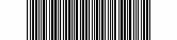

This module generates a barcode (type 39).Code 39 (sometimes called Code 3 from 9) is a discrete barcode. This means that a fixed pattern of bars represents a single character. Each character is made up of 9 bars - 3 of which are wider than the others. In this context a bar can be the printed black bar or the white space between the bars. A single character therefore consists of 5 black bars and 4 white bars.
The ratio of the bar widths can range from 2:1 to 3:1. To read a barcode reliably the decoder must be able to differentiate between the wide and narrow bars. In practice it is better to use barcodes close to the 3:1 ratio which allows nearly a 50% barwidth error to occur before ambiguity occurs.The space between each barcode character is called interval. Its width is undefined but is usually equivalent to a narrow white bar.
The Code 39 barcode symbology supports 43 characters plus an additional character used as a delimiter or start/stop character. The start/stop character always occurs as the first and last character in a complete barcode and is represented in the human readable text by the
*character. The start/stop character is added automatically to the text.The 43 character set includes the following:
Small characters are converted automatically.
1234567890ABCDEFGHIJKLMNOPQRSTUVWXYZ - . $ / + % SPACE
The module has no input.
The module has one output.
Main
- Text: The text to be coded.
- Background: Pixel value for the background.
- Foreground: Pixel value for the foreground..
- Auto/Apply: Apply changes.If Auto is On the changes will be applied automatically.
Geometry
- Start/End Margin: Size (pixel) of space at the beginning and the end of the barcode.
- Bar Width: Size (pixel) of one narrow bar.
- Ratio: Ratio between large and small bars (2.0, 2.5, 3.0)
- Interval Width: Size (pixel) of the intercharacter gap
- Size Y: Height (pixel) of the barcode - width is calculated by the module
Events & Interaction
None.Example
None.Tips & Tricks
None.Known Bugs
None.